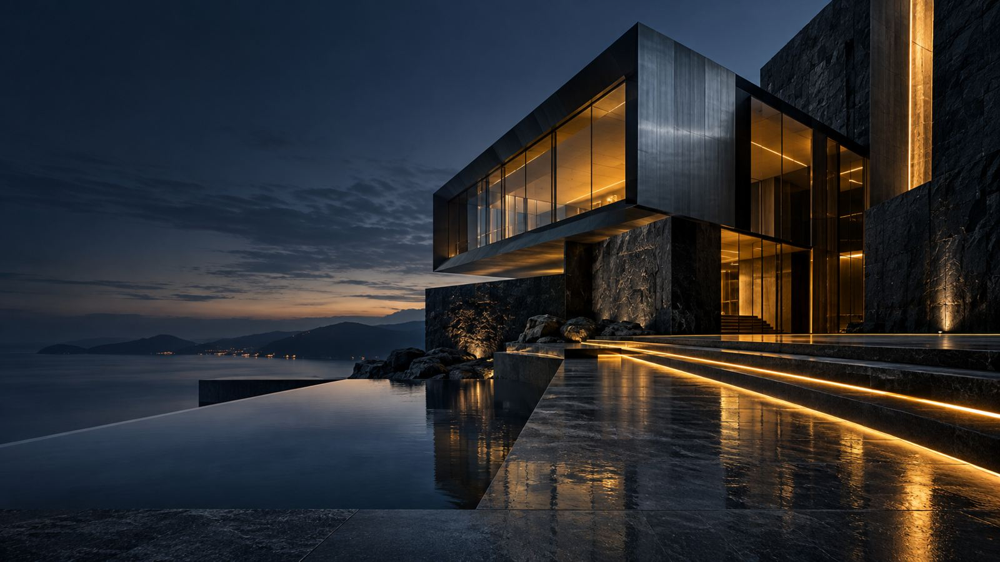
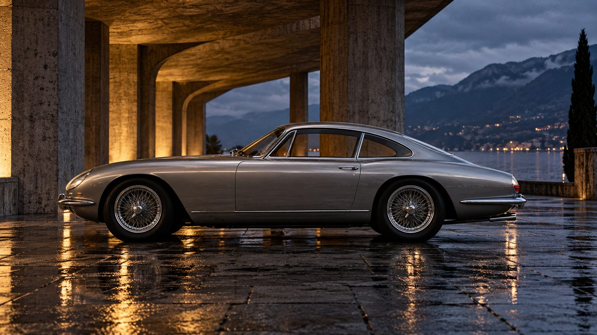

A story gets room to breathe.
Image, headline and introduction work together as one composed opening.
These are independent static composition studies, not consecutive sections of one page. On the homepage the Major Feature replaces the A hero, then Editorial Picks follow. Existing Ether, MOTOR, and FORM pages remain their own experiences.
One strong story opens the issue. The rest unfolds with the rhythm of a magazine, not a wall of cards.

Image, headline and introduction work together as one composed opening.
The second story changes scale and pace.
The cover opens the question. The story carries it forward. Read the full feature for the argument.
Editorial Picks follow below ↓Details lead to a silhouette, then a reveal. Every scroll changes what you know about the subject.

A chapter has its own image, purpose, and tempo. The sequence tells the story.
A calmer page for reporting, analysis and essays. Evidence, authorship, and the path through the work stay visible.
The lead gets a clear scope, source trail, and date.
External work is clearly labeled and credited.
Opinion reads as opinion, apart from the news desk.